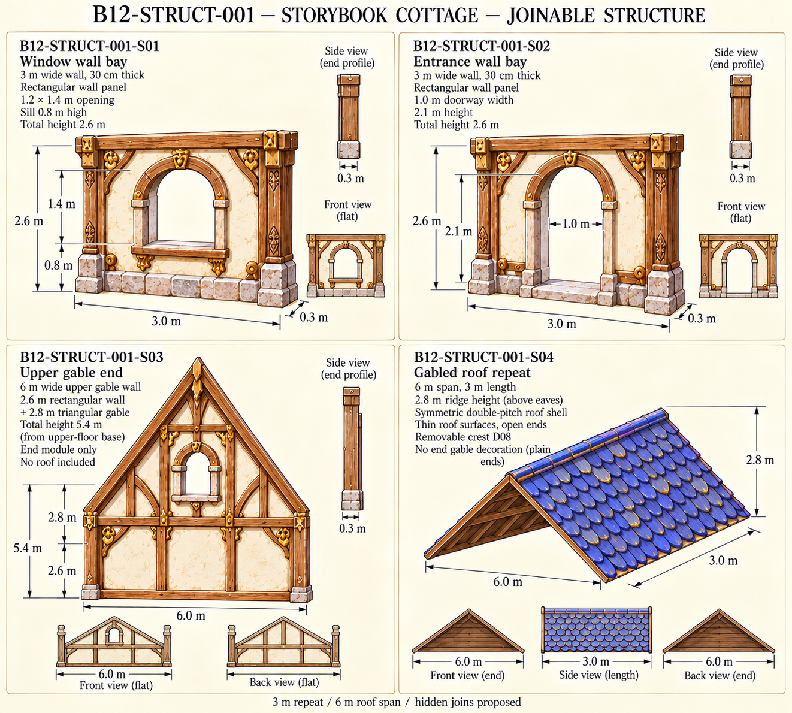
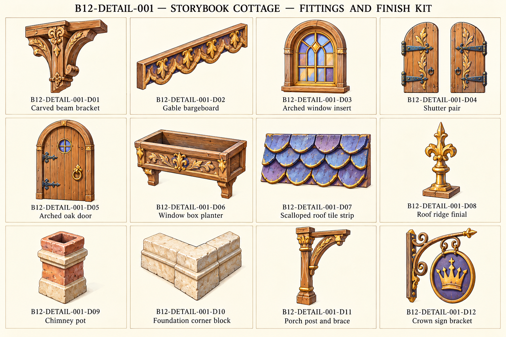
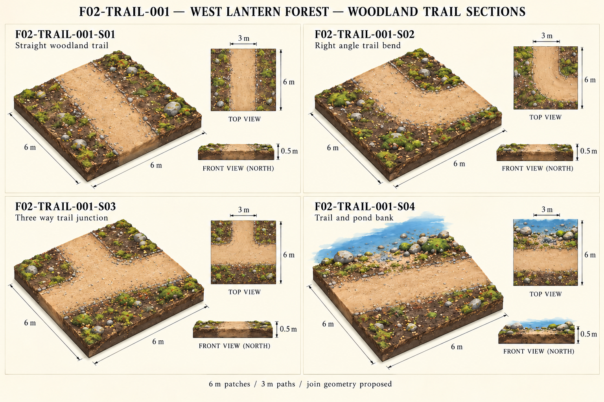
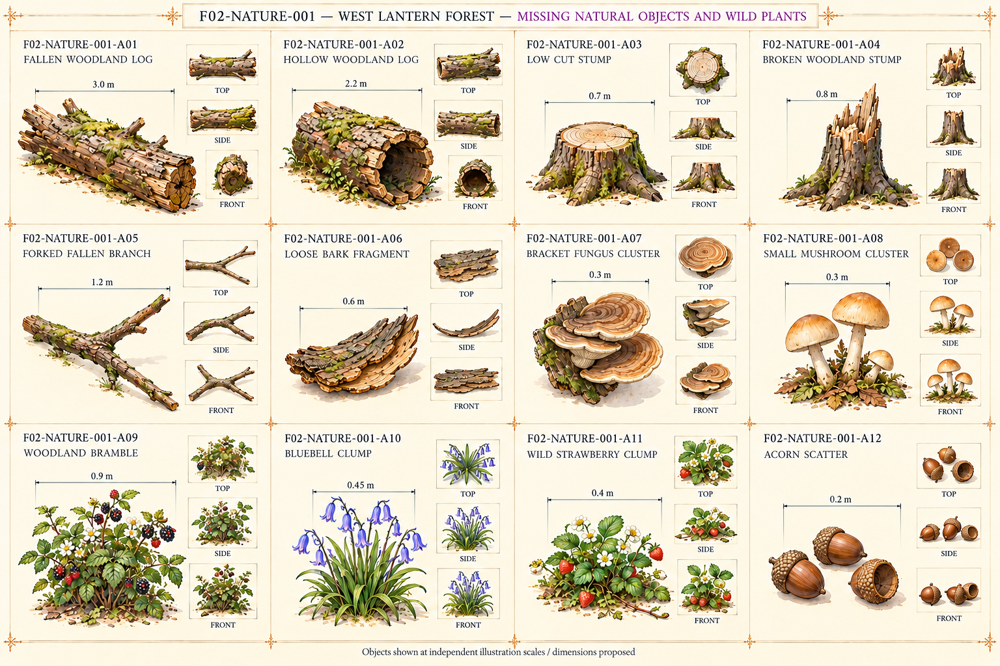
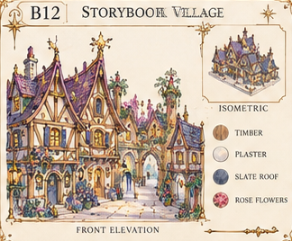
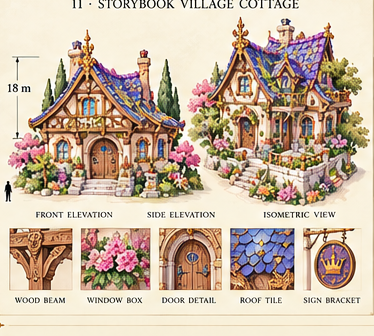
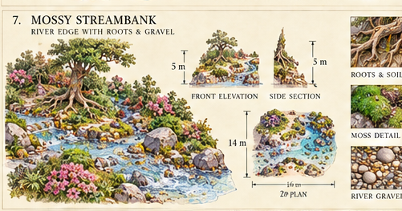

West Lantern Forest / Storybook cottages
Scope and reuse · IDs/model filenames · Review issues · Interfaces
B12-STRUCT-001 — Storybook cottage — joinable structure

B12-DETAIL-001 — Storybook cottage — fittings and finish kit

F02-TRAIL-001 — West Lantern Forest — woodland trail sections

F02-NATURE-001 — West Lantern Forest — missing natural objects and wild plants

Original source: B12-village-original

Original source: B12-storybook-cottage

Original source: mossy-streambank-original
